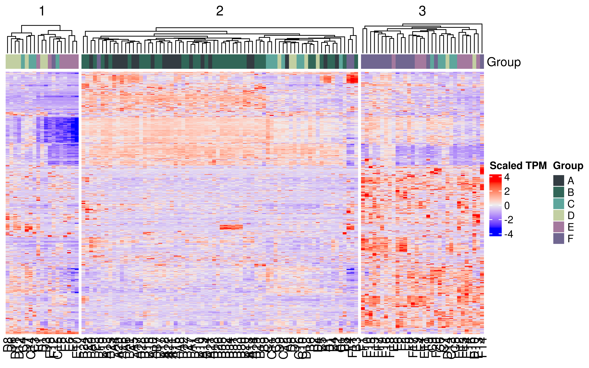
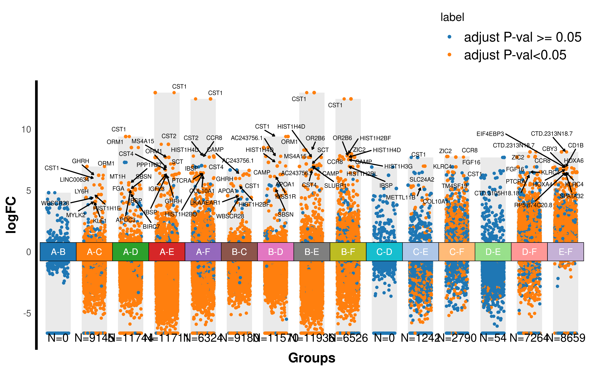
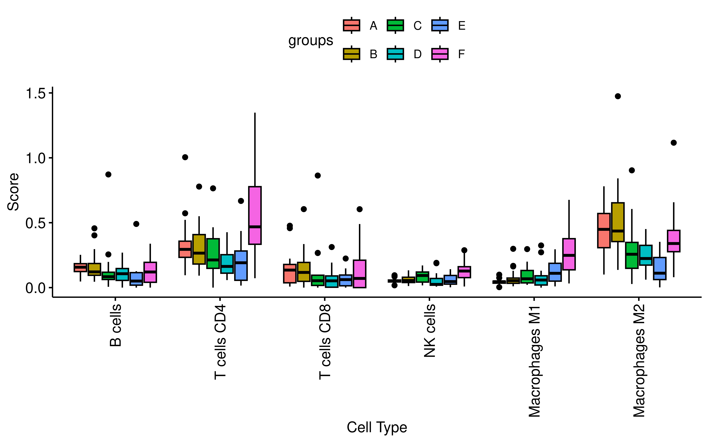
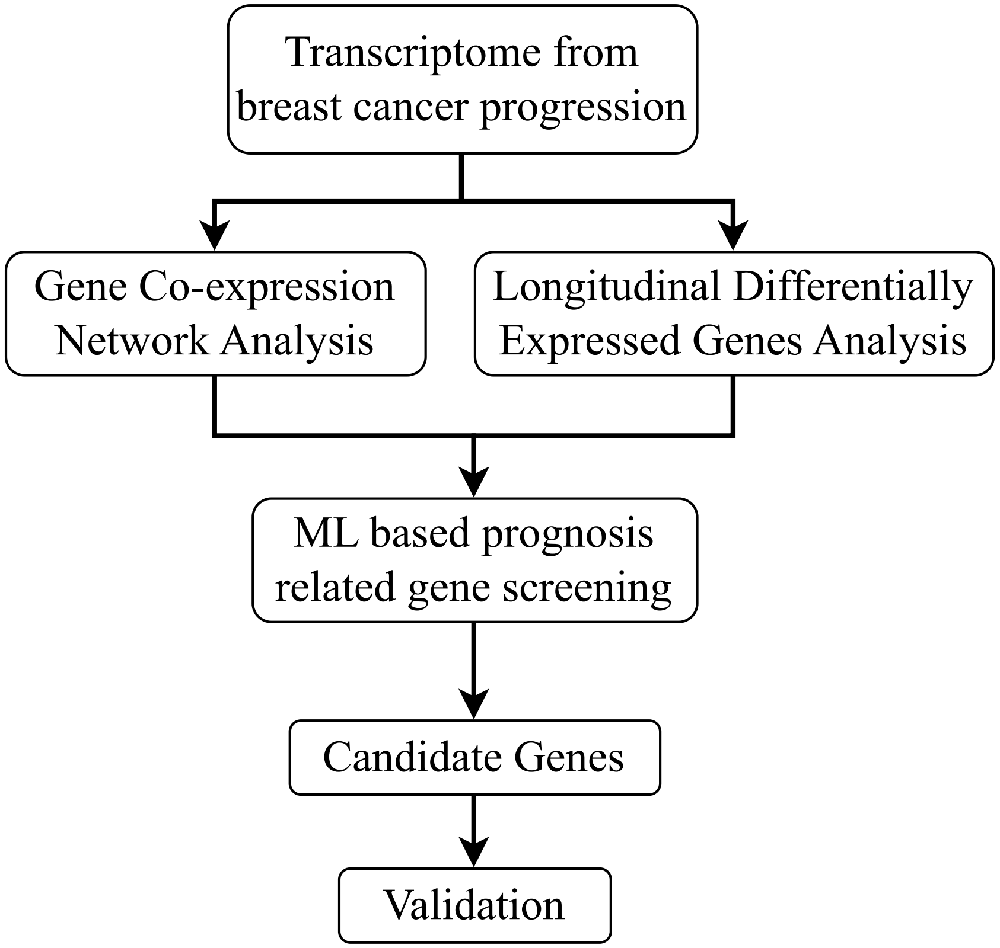
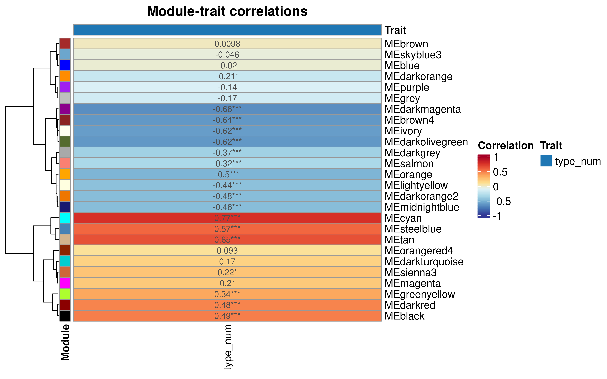
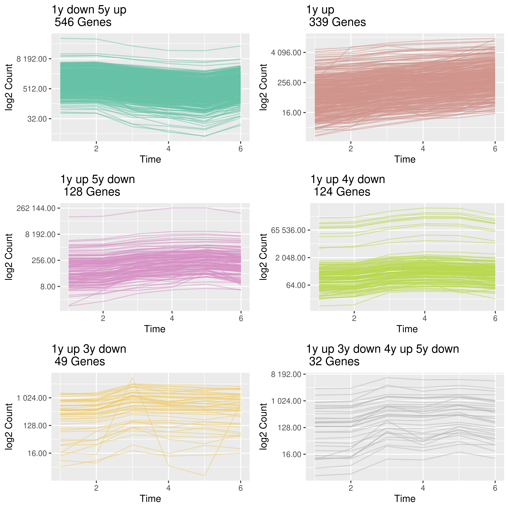
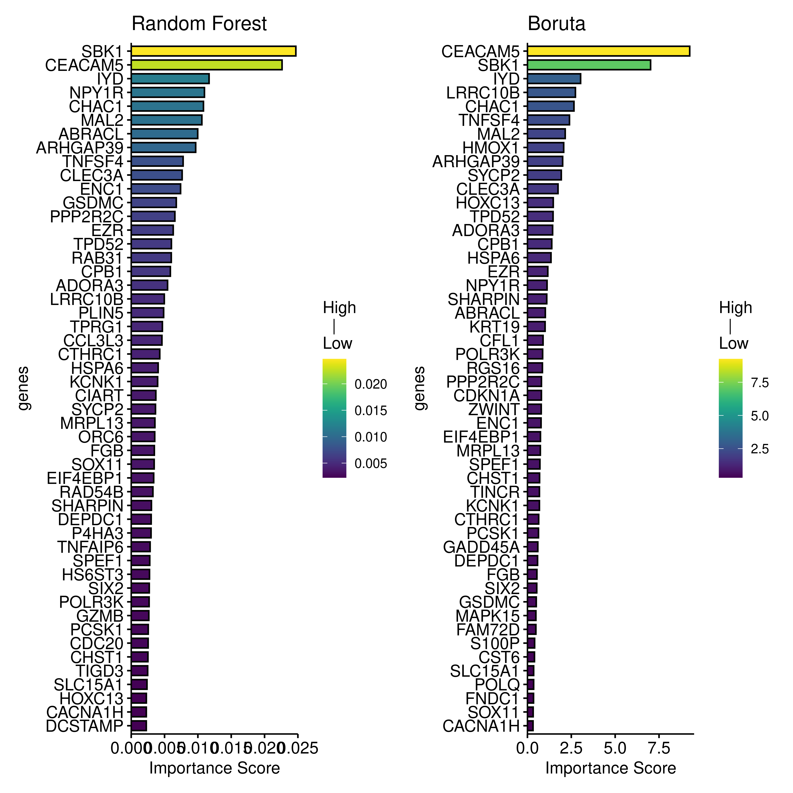
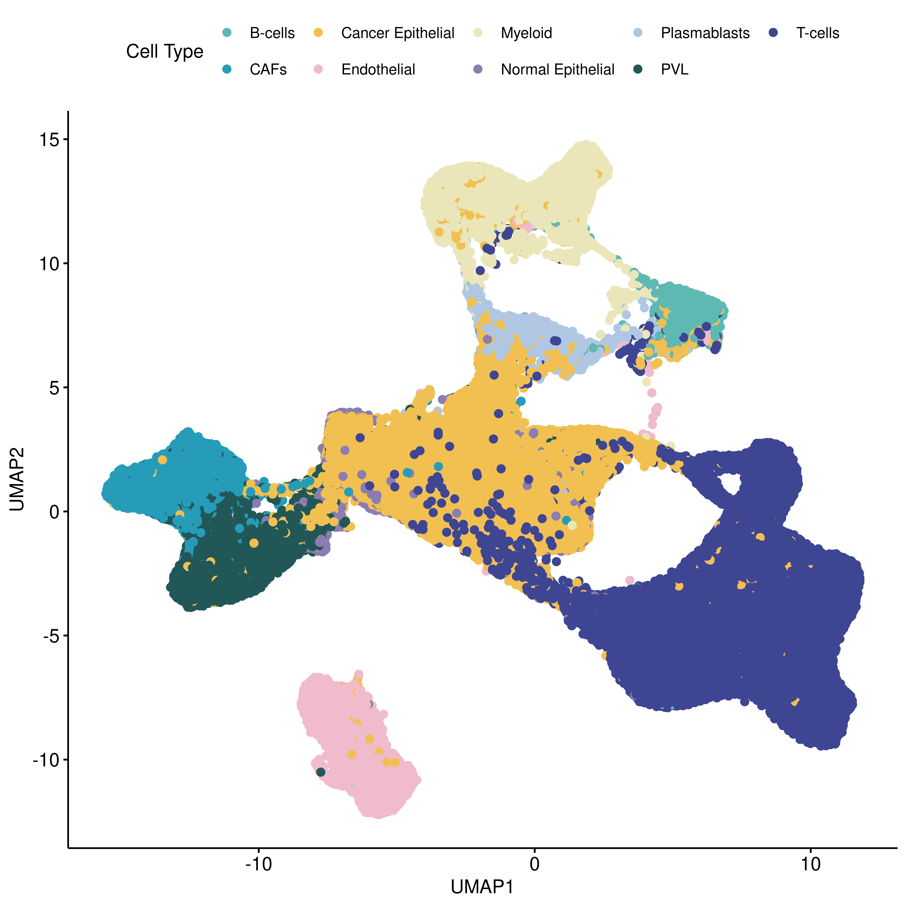
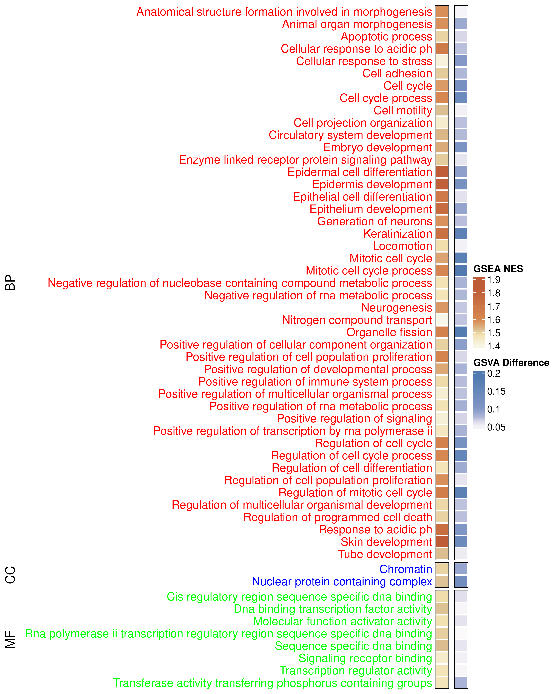

Discovering key genes using transcriptome from different stages of breast cancer development
Differences in different stages of breast cancer development
We first used the pre-trained transcriptome model BulkFormer (https://github.com/KangBoming/BulkFormer) to obtain the embedding for each sample, and then used tsne to perform dimensionality reduction and visualization of the samples.
library(Rtsne)
counts <- readRDS("~/Breast_cancer_dev/data/exp_counts.rds") %>% as.data.frame()
rownames(counts) <- counts$Gene_ID
counts$Gene_ID <- NULL
counts <- t(counts) %>% as.data.frame()
# write.csv(counts,"data/brca_bulkformer_input.csv",quote = F)
emb <- data.table::fread("~/Breast_cancer_dev/data/bulk_former_res.csv",data.table = F,
header = T)
emb$V1 <- NULL
rownames(emb) <- rownames(counts)
colnames(emb) <- paste0("Emb_",colnames(emb))
set.seed(20251128)
tsne_results <- Rtsne(emb, dims = 2,
perplexity = 30, verbose = FALSE, max_iter = 5000, eta = 100,
theta = 0)
tsne_df <- data.frame(
X = tsne_results$Y[, 1],
Y = tsne_results$Y[, 2],
sample = rownames(emb)
) %>% mutate(type = substr(sample,1,1)) %>%
mutate(type2 = case_when(
type %in% c('A','B') ~ "I (A,B)",
type %in% c("C") ~ "II (C)",
type %in% c("D","E") ~ "III (D,E)",
TRUE ~ "IV (F)"
)) %>%
mutate(type3 = case_when(
(type2 == "IV (F)") & (!(sample %in% c("F5","F18","F12","F19"))) ~ "IV (F)",
type %in% c('A','B') ~ "I (A,B)",
type %in% c("C") ~ "II (C)",
type %in% c("D","E") ~ "III (D,E)",
TRUE ~ "others"
))
colors <- c("#A64036","#F0C2A2","#4182A4","#594C57","#DB9C5E","#E2A2AC")
ggplot(tsne_df, aes(x = X, y = Y, color = factor(type2))) +
geom_point(size = 3)+
stat_ellipse(
data = subset(tsne_df, (type3 != "others") & (type3 != "II (C)")), # 只选择特定点
aes(x = X, y = Y, color = factor(type3))
)+
theme_minimal()
We then calculated the differentially expressed genes between the pairwise groups:
tpm <- readRDS("data/exp_tpm.rds")
get_diff <- function(gene, df, control_group, permute=FALSE){
tmp_dt <- df[gene,] %>% t() %>% as.data.frame(check.names = FALSE) %>%
rename(exp = 1)
tmp_dt$sample <- rownames(tmp_dt)
tmp_dt <- tmp_dt %>%
mutate(type = ifelse(substr(sample,1,1) == control_group,"con","treat"))
if (permute){
tmp_dt$type <- sample(tmp_dt$type, replace = FALSE)
}
tmp_test <- wilcox.test(exp ~ type, data = tmp_dt)
tmp_res <- data.frame(
diff = median(tmp_dt$exp[tmp_dt$type == "treat"]) - median(tmp_dt$exp[tmp_dt$type == "con"]),
fc = median(tmp_dt$exp[tmp_dt$type == "treat"]) / (median(tmp_dt$exp[tmp_dt$type == "con"]) + 0.01),
p_value = tmp_test$p.value,
gene = tmp_gene
)
if (permute){
tmp_res <- tmp_test$p.value
}
return(tmp_res)
}
get_diff_bulk <- function(group, df, n_cores){
##group: like A-B, control in first
##df: expression in TPM
groups <- strsplit(group,"-")[[1]]
dt <- df %>%
select(starts_with(groups[1]) | starts_with(groups[2]))
all_genes <- rownames(dt)
#create the cluster
my.cluster <- parallel::makeCluster(
n_cores,
type = "PSOCK"
)
#register it to be used by %dopar%
doParallel::registerDoParallel(cl = my.cluster)
res <- foreach(
i = all_genes,
.export = c("get_diff","dt","groups"),
.packages = "dplyr"
) %dopar% {
tmp_gene <- i
##
tmp_res <- get_diff(gene = tmp_gene, df = dt, control_group = groups[1])
##permutate
per_tmp_res <- sapply(1:100,
function(x){
get_diff(gene = tmp_gene, df = dt,
control_group = groups[1], permute = TRUE)
})
per_tmp_res_adj_p <- p.adjust(per_tmp_res,"fdr")
tmp_res$per_sig_frac <- mean(per_tmp_res_adj_p < 0.05)
return(tmp_res)
}
parallel::stopCluster(cl = my.cluster)
res <- bind_rows(res)
res$p_adj <- p.adjust(res$p_value,"fdr")
res$groups <- group
return(res)
}
combinations <- combn(c("A","B","C","D","E","F"),
2, FUN = function(x) paste(x, collapse = "-"))
all_res <- vector("list",length = length(combinations))
for (i in seq_along(combinations)){
tmp <- get_diff_bulk(group = combinations[i], df = tpm, n_cores = 100)
all_res[[i]] <- tmp
message("Complete ",combinations[i])
}
all_res <- bind_rows(all_res)
saveRDS(all_res,"data/diff_all_exp.rds")Based on differentially expressed genes, we created gene expression heatmap:
rm(list = ls())
detach("package:Rtsne", unload = TRUE)
tpm <- readRDS("~/Breast_cancer_dev/data/exp_tpm.rds")
diff_all_exp <- readRDS("~/Breast_cancer_dev/data/diff_all_exp.rds")
sig_diff <- diff_all_exp %>% filter(p_adj < 0.05 & per_sig_frac == 0) %>%
mutate(log2fc = log2(fc + 0.01))
sig_top <- sig_diff %>%
group_by(groups) %>%
slice_max(order_by = fc, n=100) %>%
ungroup()
dt <- tpm[unique(sig_top$gene),] %>% as.matrix()
dt <- log2(dt+1)
dt_z <- t(scale(t(dt)))
library(ComplexHeatmap)#> Loading required package: grid#> ========================================
#> ComplexHeatmap version 2.20.0
#> Bioconductor page: http://bioconductor.org/packages/ComplexHeatmap/
#> Github page: https://github.com/jokergoo/ComplexHeatmap
#> Documentation: http://jokergoo.github.io/ComplexHeatmap-reference
#>
#> If you use it in published research, please cite either one:
#> - Gu, Z. Complex Heatmap Visualization. iMeta 2022.
#> - Gu, Z. Complex heatmaps reveal patterns and correlations in multidimensional
#> genomic data. Bioinformatics 2016.
#>
#>
#> The new InteractiveComplexHeatmap package can directly export static
#> complex heatmaps into an interactive Shiny app with zero effort. Have a try!
#>
#> This message can be suppressed by:
#> suppressPackageStartupMessages(library(ComplexHeatmap))
#> ========================================# 创建样本分组信息
sample_groups <- factor(substr(colnames(dt_z),1,1))
names(sample_groups) <- colnames(dt_z)
ha <- HeatmapAnnotation(
Group = sample_groups,
col = list(Group = c("A" = "#333C42", "B" = "#316658", "C" = "#5EA69C",
"D" = "#C2CFA2", "E" = "#A4799E", "F" = "#706690"))
)
set.seed(20251121)
Heatmap(dt_z, show_row_names = F, show_row_dend = F, top_annotation = ha,
column_km = 3, name = "Scaled TPM", cluster_column_slices = FALSE)#> The automatically generated colors map from the minus and plus 99^th of
#> the absolute values in the matrix. There are outliers in the matrix
#> whose patterns might be hidden by this color mapping. You can manually
#> set the color to `col` argument.
#>
#> Use `suppressMessages()` to turn off this message.
and volcano plots of differentially expressed genes for different groups:
rm(list = ls())
detach("package:ComplexHeatmap", unload = TRUE)
diff_all_exp <- readRDS("~/Breast_cancer_dev/data/diff_all_exp.rds")
all_res <- diff_all_exp %>%
filter(!is.nan(p_value)) %>%
mutate(log2fc = log2(fc + 0.01))
sig_diff <- all_res %>% filter((p_value < 0.05) & (per_sig_frac == 0)) %>%
mutate(change = as.factor(ifelse(fc > 1,"up","down"))) %>%
mutate(label = ifelse(p_adj < 0.05,"adjust P-val<0.05","adjust P-val >= 0.05"))
TopGene <-
sig_diff %>%
group_by(groups) %>%
distinct(gene, .keep_all = T) %>%
top_n(10, log2fc)
label_gene <- TopGene %>% filter(p_adj < 0.05)
dbar <-
sig_diff %>%
group_by(groups) %>%
summarise(logfc_min = min(log2fc), logfc_max = max(log2fc), diff_gene = sum(p_adj < 0.05)) %>%
mutate(label = "adjust P-val >= 0.05") %>% ungroup()
library(ggsci)
library(ggrepel)
# 直接出图
ggplot()+
geom_col(data = dbar, # 绘制负向背景柱状图
mapping = aes(x = groups,y = logfc_min),
fill = "#dcdcdc",alpha = 0.6, width = 0.7) +
geom_col(data = dbar, # 绘制正向背景柱状图
mapping = aes(x = groups,y = logfc_max),
fill = "#dcdcdc",alpha = 0.6, width = 0.7) +
geom_jitter(data = sig_diff, # 绘制所有数据点
aes(x = groups, y = log2fc, color = label),
size = 0.85,
width =0.3) +
geom_jitter(data = TopGene, # 绘制top10数据点
aes(x = groups, y = log2fc, color = label),
size = 1,
width =0.35) +
geom_tile(data = TopGene, # 绘制中心分组标记图
aes(x = groups,
y = 0,
fill = groups),
height=1.5,
color = "black",
alpha = 0.6,
show.legend = F) +
ggsci::scale_fill_d3(palette = "category20") + # 自定义颜色
ggsci::scale_color_d3(palette = "category20") + # 自定义颜色
geom_text_repel(data = label_gene, # 这里的filter很关键，筛选你想要标记的基因
aes(x = groups, y = log2fc, label = gene),
size = 2,
max.overlaps = getOption("ggrepel.max.overlaps", default = 30),
color = 'black',
force = 1.2,
arrow = arrow(length = unit(0.008, "npc"),
type = "open", ends = "last")) +
labs(x="Groups", y="logFC") +
geom_text(data=TopGene, # 绘制中心分组标记图文本注释
aes(x=groups,
y=0,
label=groups),
size = 3,
color ="white") +
theme_minimal() +
theme(axis.title = element_text(size = 13,color = "black",face = "bold"),
axis.line.y = element_line(color = "black",size = 1.2),
axis.line.x = element_blank(),
axis.text.x = element_blank(),
panel.grid = element_blank(),
legend.position = "top",
legend.direction = "vertical",
legend.justification = c(1,0),
legend.text = element_text(size = 13))+
annotate("text", x = dbar$groups, y = -7,
label = paste0("N=", dbar$diff_gene))#> Warning: The `size` argument of `element_line()` is deprecated as of ggplot2 3.4.0.
#> ℹ Please use the `linewidth` argument instead.
#> This warning is displayed once every 8 hours.
#> Call `lifecycle::last_lifecycle_warnings()` to see where this warning was
#> generated.
We used GSVA to calculate the enrichment levels (NES) of 50 Hallmark pathways in different samples, and then calculated the enrichment differences of different pathways between each group.
library(GSVA)
tpm <- readRDS("~/Breast_cancer_dev/data/exp_tpm.rds")
tpm <- log2(as.matrix(tpm) + 1)
pat <- fgsea::gmtPathways("~/melanoma/data/h.all.v2024.1.Hs.symbols.gmt")
gsvaPar <- gsvaParam(tpm, pat)
gsva.es <- gsva(gsvaPar, verbose=TRUE)
saveRDS(gsva.es,"data/gsva_res.rds")
###
gsea_res <- readRDS("data/gsva_res.rds") %>% as.data.frame()
combinations <- combn(c("A","B","C","D","E","F"),
2, FUN = function(x) paste(x, collapse = "-"))
all_res <- vector("list",length = length(combinations))
for (i in seq_along(combinations)){
tmp <- get_diff_bulk(group = combinations[i], df = gsea_res, n_cores = 50)
all_res[[i]] <- tmp
message("Complete ",combinations[i])
}
all_res <- bind_rows(all_res)
saveRDS(all_res,"data/diff_gsva.rds")Then, we plot the heatmap to show the differences:
rm(list = ls())
all_res <- readRDS("~/Breast_cancer_dev/data/diff_gsva.rds")
dt_v <- all_res %>%
select(groups, gene, diff) %>%
tidyr::pivot_wider(names_from = groups, values_from = diff) %>% as.data.frame()
rownames(dt_v) <- dt_v$gene
dt_v$gene <- NULL
dt_p <- all_res %>%
select(groups, gene, p_adj) %>%
tidyr::pivot_wider(names_from = groups, values_from = p_adj) %>% as.data.frame()
rownames(dt_p) <- dt_p$gene
dt_p$gene <- NULL
dt_v <- as.matrix(dt_v)
dt_p <- as.matrix(dt_p)
dt_v <- ifelse(dt_p < 0.05, dt_v, NA)
library(ComplexHeatmap)#> ========================================
#> ComplexHeatmap version 2.20.0
#> Bioconductor page: http://bioconductor.org/packages/ComplexHeatmap/
#> Github page: https://github.com/jokergoo/ComplexHeatmap
#> Documentation: http://jokergoo.github.io/ComplexHeatmap-reference
#>
#> If you use it in published research, please cite either one:
#> - Gu, Z. Complex Heatmap Visualization. iMeta 2022.
#> - Gu, Z. Complex heatmaps reveal patterns and correlations in multidimensional
#> genomic data. Bioinformatics 2016.
#>
#>
#> The new InteractiveComplexHeatmap package can directly export static
#> complex heatmaps into an interactive Shiny app with zero effort. Have a try!
#>
#> This message can be suppressed by:
#> suppressPackageStartupMessages(library(ComplexHeatmap))
#> ========================================rownames(dt_v) <- gsub("HALLMARK_","",rownames(dt_v))
p <- Heatmap(dt_v,cluster_rows = F,cluster_columns = F, row_names_side = "left",
na_col = "white", border=T, rect_gp = gpar(col = "white", lwd = 2),
name = "ES Difference", row_names_max_width = max_text_width(
rownames(dt_v),
gp = gpar(fontsize = 12)
))Finally, we used eight immune cell deconvolution tools to quantify
the proportions of various immune cells from the transcriptome data
(code can be found in scripts folder). Here, we show the
results of CIBERSORT:
rm(list = ls())
detach("package:ComplexHeatmap", unload = TRUE)
all_immune <- readRDS("~/Breast_cancer_dev/data/all_immune_8.rds")
dt <- all_immune %>% filter(grepl("cibersort_abs",cell_type))
rownames(dt) <- dt$cell_type
dt$cell_type <- NULL
dt <- t(dt) %>% as.data.frame()
dt$sample <- rownames(dt)
colnames(dt) <- gsub("cibersort_abs~","",colnames(dt))
dt <- dt %>%
mutate(`B cells` = `B cells naive` + `B cells memory`,
`T cells CD4` = `T cells CD4 naive` + `T cells CD4 memory resting` + `T cells CD4 memory activated`,
`NK cells` = `NK cells resting` + `NK cells activated`) %>%
select(`B cells`, `T cells CD4`, `T cells CD8`, `NK cells`, `Macrophages M1`,
`Macrophages M2`, sample)
dt <- dt %>%
mutate(groups = substr(sample,1,1)) %>%
select(sample, groups, everything()) %>%
tidyr::pivot_longer(cols = 3:ncol(.),
names_to = "cell_type", values_to = "Score")
library(ggpubr)
ggboxplot(dt,x="cell_type",y="Score",fill = "groups",xlab = "Cell Type")+
rotate_x_text()#> Warning: The `size` argument of `element_rect()` is deprecated as of ggplot2 3.4.0.
#> ℹ Please use the `linewidth` argument instead.
#> ℹ The deprecated feature was likely used in the ggpubr package.
#> Please report the issue at <https://github.com/kassambara/ggpubr/issues>.
#> This warning is displayed once every 8 hours.
#> Call `lifecycle::last_lifecycle_warnings()` to see where this warning was
#> generated.
Identify genes important for the development and progression of breast cancer
We first performed WGCNA analysis, using different progression stages of breast cancer development as phenotypic variables to identify gene modules associated with cancer progression. Secondly, we conducted temporal differential gene analysis to identify genes whose expression levels gradually increased as breast cancer progressed. These two results were combined to form candidate genes for the first stage. Next, we used three machine learning methods, including lasso regression, random forest, and Boruta, to model the expression of these genes and patient prognosis on the TCGA dataset. By analyzing the importance of model variables, we can identify genes that are more important for predicting prognosis. Finally, seven genes were selected for further validation.

First, perform WGCNA analysis:
##########WGCNA
library(BioNERO)
set.seed(20250412)
exp_tpm <- readRDS("data/exp_tpm.rds")
sample_metadata <- data.frame(sample = colnames(exp_tpm)) %>%
mutate(type = substr(sample,1,1)) %>%
as.data.frame() %>%
left_join(
.,
data.frame(
type = c("A","B","C","D","E","F"),
type_num = c(1,2,3,4,5,6)
)
) %>% select(-type)
rownames(sample_metadata) <- sample_metadata$sample
sample_metadata$sample <- NULL
se <- SummarizedExperiment::SummarizedExperiment(assays = list(tpm = as.matrix(exp_tpm)),
colData = sample_metadata)
exp_filt <- remove_nonexp(se, method = "median", min_exp = 2)
dim(exp_filt)
exp_filt <- filter_by_variance(exp_filt, n = 5000)
exp_filt <- ZKfiltering(exp_filt, cor_method = "spearman")
exp_filt <- PC_correction(exp_filt)
WGCNA::enableWGCNAThreads(nThreads = 40)
sft <- SFT_fit(exp_filt, net_type = "signed hybrid", cor_method = "spearman")
sft$plot
power <- sft$power
net <- exp2gcn(exp_filt, net_type = "signed hybrid", SFTpower = power,
cor_method = "spearman")
###筛选显著相关性的模块
MEtrait <- module_trait_cor(exp = exp_filt, MEs = net$MEs)
saveRDS(MEtrait,"data/MEtrait_conF.rds")
saveRDS(net,file = "data/WGCNA_res_conF.rds")
saveRDS(exp_filt, file = "data/WGCNA_exp_conF.rds")
#> net <- readRDS("~/Breast_cancer_dev/data/WGCNA_res_conF.rds")
MEtrait <- readRDS("~/Breast_cancer_dev/data/MEtrait_conF.rds")
plot_dendro_and_colors(net)



Save genes from the most relevant module.
gene_module <- net$genes_and_modules
dt <- gene_module %>% filter(Modules == "cyan")
saveRDS(dt,file = "data/cyan_module_genes.rds")Next, we will use TrendCatcher to identify dynamic differentially expressed genes:
expcounts <- readRDS("data/exp_counts.rds") %>% as.data.frame()
rownames(expcounts) <- expcounts$Gene_ID
expcounts$Gene_ID <- NULL
sample_name <- colnames(expcounts)
sample_name <- data.frame(
ori_sample = sample_name
) %>% mutate(group = substr(ori_sample,1,1)) %>%
left_join(.,
data.frame(
group = c("A","B","C","D","E","F"),
time = c(1,2,3,4,5,6)
)) %>%
mutate(rep = gsub("[A-Z]","",ori_sample)) %>%
mutate(cu_name = paste0("B","_",time,"_","Rep",rep))
colnames(expcounts) <- sample_name$cu_name
write.csv(expcounts,"data/exp_counts.csv")
library(TrendCatcher)
master.list <- run_TrendCatcher(count.table.path = "~/Breast_cancer_dev/data/exp_counts.csv",
baseline.t = 1,
time.unit = "y",
min.low.count = 1,
para.core.n = 50,
dyn.p.thres = 0.05)
ft <- master.list$fitted.count
mt <- master.list$master.table
mapping <- data.table::fread("/data/sde/wt/TCGA/gencode.v22.annotation.gene.probeMap",
data.table = F)
mt <- mt %>%
left_join(.,mapping %>%
mutate(id = gsub("[.].+","",id)) %>% dplyr::select(id,gene) %>%
rename(Gene = id))
master.list$master.table$Symbol <- mt$gene
saveRDS(master.list,file = "data/master_list_conF.rds")
tt <- mt %>% filter(pattern_str == "1y_up_6y") %>%
arrange(desc(dynSign))
saveRDS(tt,"data/TrendCatcher_1y_up_6.rds")We can plot the expression trend of genes with different expression patterns.
rm(list = ls())
detach("package:BioNERO", unload = TRUE)
suppressPackageStartupMessages(library(TrendCatcher,quietly = TRUE))
master.list <- readRDS("~/Breast_cancer_dev/data/master_list_conF.rds")
draw_TrajClusterGrid(master.list = master.list, min.traj.n = 30)
The union between genes of WGCNA cyan module and TrendsCatcher is 365 genes:
detach("package:TrendCatcher", unload = TRUE)
cyan_genes <- readRDS("~/Breast_cancer_dev/data/cyan_module_genes.rds")
trends_genes <- readRDS("~/Breast_cancer_dev/data/TrendCatcher_1y_up_6.rds")
all_genes <- union(cyan_genes$Genes, trends_genes$Symbol)
print(all_genes)#> [1] "GPRC5A" "COL11A1" "FOSL2" "FAP" "RGS1" "GADD45B"
#> [7] "MMP11" "HCFC1R1" "CAPS" "COMP" "SERPINE1" "ASPN"
#> [13] "PSMD3" "COL12A1" "GRB14" "FN1" "SDC1" "GADD45A"
#> [19] "CTGF" "INHBA" "COL10A1" "TNFAIP6" "PMEPA1" "CDKN1A"
#> [25] "SAT1" "RARA" "MATN3" "RAMP1" "KCNK1" "ALDH1B1"
#> [31] "SULF1" "CILP" "RFWD2" "COL8A1" "CDKN2B" "FAM49B"
#> [37] "S100P" "FNDC1" "CTHRC1" "GJB2" "NNMT" "GREM1"
#> [43] "MS4A7" "RAB31" "CXCL10" "CXCL11" "ENC1" "LRRC15"
#> [49] "OLR1" "CST6" "MAPK15" "BGN" "S100A10" "CPB1"
#> [55] "FGB" "CLEC3A" "PCSK1" "CNTNAP2" "HIST1H3H" "CXCL9"
#> [61] "CENPE" "DIO1" "CEACAM5" "S100A8" "S100A7" "PPAPDC1A"
#> [67] "MUC19" "VMP1" "FCGR1A" "ADAMDEC1" "UBE2C" "CFAP45"
#> [73] "SYT13" "RAB26" "NBPF6"
#> [ reached getOption("max.print") -- omitted 290 entries ]Then we performed ML modeling using TCGA samples, the processing of
TCGA sample can be found in
scripts/tcga_sample_processed.R.
- Lasso
###lasso
library(glmnet)
library(survival)
sample_info <- readRDS("data/tcga_brca_sampleinfo.rds")
exp_filter <- readRDS("data/tcga_brca_filter_exp.rds")
suvr_data <- sample_info %>% select(samples,OS.time,OS) %>%
rename(status = OS, time = OS.time) %>% as.data.frame()
rownames(suvr_data) <- suvr_data$samples
suvr_data$samples <- NULL
exp_m <- exp_filter
rownames(exp_m) <- exp_m$gene
exp_m$gene <- NULL
exp_m <- t(exp_m)
cyan_genes <- readRDS("data/cyan_module_genes.rds")
trends_genes <- readRDS("data/TrendCatcher_1y_up_6.rds")
all_genes <- intersect(colnames(exp_m),
union(cyan_genes$Genes, trends_genes$Symbol))
set.seed(20250529)
require(doMC)
registerDoMC(cores = 80)
cvfit <- cv.glmnet(exp_m[,all_genes],
as.matrix(suvr_data), family = "cox", type.measure = "C",
nfolds = 5, parallel = TRUE)
plot(cvfit)
fit <- glmnet(exp_m[,all_genes], as.matrix(suvr_data), family = "cox")
gene_cof <- coef(fit, s = cvfit$lambda.min) %>% as.matrix() %>% as.data.frame() %>%
rename(cof = 1)
gene_cof$genes <- rownames(gene_cof)
saveRDS(gene_cof, "data/lasso_res.rds")
- Random Forest:
exp <- readRDS("data/tcga_brca_filter_exp.rds")
surv <- readRDS("data/tcga_brca_sampleinfo.rds")
rownames(exp) <- exp$gene
exp$gene <- NULL
exp <- t(exp) %>% as.data.frame()
which(rownames(exp) != surv$samples)
exp_surv <- bind_cols(exp,surv %>% select(OS.time,OS))
cyan_genes <- readRDS("data/cyan_module_genes.rds")
trends_genes <- readRDS("data/TrendCatcher_1y_up_6.rds")
all_genes <- intersect(colnames(exp_surv),
union(cyan_genes$Genes, trends_genes$Symbol))
dt <- exp_surv %>% select(OS.time,OS,all_genes)
library(randomForestSRC)
library(parallel)
options(mc.cores = 60)
obj <- rfsrc(Surv(OS.time, OS) ~., dt,
ntree = 1000, nodesize = 5, nsplit = 50, importance = TRUE)
jk.obj <- subsample(obj)
imp <- jk.obj$rf$importance
imp <- jk.obj$rf$importance %>% as.data.frame()
colnames(imp) <- "importance"
imp$genes <- rownames(imp)
saveRDS(imp,"data/rf_res.rds")- Boruta
library(Boruta)
library(survival)
boruta_selection <- function(data, maxRuns, time, status) {
set.seed(456)
boruta_rsf <- Boruta(
data,
Surv(time, status),
respect.unordered.factors = TRUE,
maxRuns = maxRuns,
doTrace = 0,
pValue = 0.05
)
boruta_rsf
}
exp <- readRDS("data/tcga_brca_filter_exp.rds")
surv <- readRDS("data/tcga_brca_sampleinfo.rds")
rownames(exp) <- exp$gene
exp$gene <- NULL
exp <- t(exp) %>% as.data.frame()
which(rownames(exp) != surv$samples)
exp_surv <- bind_cols(exp,surv %>% select(OS.time,OS)) %>%
select(OS.time, OS, everything())
cyan_genes <- readRDS("data/cyan_module_genes.rds")
trends_genes <- readRDS("data/TrendCatcher_1y_up_6.rds")
all_genes <- intersect(colnames(exp_surv),
union(cyan_genes$Genes, trends_genes$Symbol))
dt <- exp_surv %>% select(OS.time,OS,all_genes)
covariates <- colnames(dt)[3:ncol(dt)]
boruta_rsf_os <- boruta_selection(dt[covariates], 2000, dt$OS.time, dt$OS)
res <- boruta_rsf_os$ImpHistory
lz <- lapply(1:ncol(boruta_rsf_os$ImpHistory),
function(i)
boruta_rsf_os$ImpHistory[is.finite(boruta_rsf_os$ImpHistory[, i]), i])
names(lz) <- colnames(res)
median_imp <- sapply(lz, median) %>% as.data.frame()
colnames(median_imp) <- "imp"
median_imp$genes <- rownames(median_imp)
saveRDS(median_imp,"data/boruta_res.rds")We can plot the importance score of RF and boruta:
rm(list = ls())
lasso_res <- readRDS("~/Breast_cancer_dev/data/lasso_res.rds")
rf_res <- readRDS("~/Breast_cancer_dev/data/rf_res.rds") %>%
arrange(desc(importance))
boruta_res <- readRDS("~/Breast_cancer_dev/data/boruta_res.rds") %>%
arrange(desc(imp))
dt_all <- left_join(
lasso_res %>% rename(lasso_score = cof),
rf_res %>% rename(rf_score = importance)
) %>% left_join(.,boruta_res %>% rename(bo_score = imp))#> Joining with `by = join_by(genes)`
#> Joining with `by = join_by(genes)`dt <- dt_all %>%
filter(lasso_score != 0) %>%
filter(rf_score > 0) %>%
filter(bo_score > 0) %>%
mutate(rank_rf = rank(rf_score),
rank_bo = rank(bo_score))
dt <- dt %>%
arrange(rf_score)
dt$genes <- factor(dt$genes, levels = dt$genes)
library(ggpubr)
library(viridis)#> Loading required package: viridisLitep <- ggbarplot(dt %>% slice_max(order_by = rf_score, n = 50),
x="genes",y="rf_score", fill = "rf_score")+
scale_y_continuous(expand = c(0, 0), limits = c(0, 0.025)) +
scale_fill_viridis(option = "D")
p1 <- ggpar(p,orientation = "horiz",ylab = "Importance Score",legend.title = "High\n |\nLow",
legend = "right",title = "Random Forest")
dt <- dt %>%
arrange(bo_score)
dt$genes <- factor(dt$genes, levels = dt$genes)
p <- ggbarplot(dt %>% slice_max(order_by = bo_score, n = 50),
x="genes",y="bo_score", fill = "bo_score")+
scale_y_continuous(expand = c(0, 0), limits = c(0, 9.5))+
scale_fill_viridis(option = "D")
p2 <- ggpar(p,orientation = "horiz",ylab = "Importance Score",legend.title = "High\n |\nLow",
legend = "right",title = "Boruta")
library(patchwork)#>
#> Attaching package: 'patchwork'
#>
#> The following object is masked from 'package:genefilter':
#>
#> area
#>
#> The following object is masked from 'package:MASS':
#>
#> area#> Ignoring unknown labels:
#> • colour : "High | Low"
#> • linetype : "High | Low"
#> • shape : "High | Low"
#> Ignoring unknown labels:
#> • colour : "High | Low"
#> • linetype : "High | Low"
#> • shape : "High | Low"
The results obtained from different methods are summarized to obtain the final candidate gene list.
cyan_genes <- readRDS("~/Breast_cancer_dev/data/cyan_module_genes.rds")
trends_genes <- readRDS("~/Breast_cancer_dev/data/TrendCatcher_1y_up_6.rds")
cyan_trends_inter <- intersect(cyan_genes$Genes, trends_genes$Symbol)
ml_inter <- intersect(lasso_res$genes[which(lasso_res$cof != 0)],
rf_res$genes[which(rf_res$importance > 0)]) %>%
intersect(.,boruta_res$genes[which(boruta_res$imp > 0)])
final_genes <- intersect(ml_inter, cyan_trends_inter)
#saveRDS(final_genes,"~/Breast_cancer_dev/data/final_gene.rds")
final_genes#> [1] "CDKN1A" "SAT1" "KCNK1" "CTHRC1" "RAB31" "MAPK15" "BGN"We can show the expression patten of these 7 genes:
master.list <- readRDS("~/Breast_cancer_dev/data/master_list_conF.rds")
gene.symbol.arr <- c("RAB31","MAPK15","CTHRC1","KCNK1","CDKN1A","SAT1","BGN")
TrendCatcher::draw_GeneTraj(master.list = master.list,
gene.symbol.arr = gene.symbol.arr,
ncol = 2, nrow = 4)
Further validation of KCNK1
We conducted a meta-analysis on more breast cancer data to validate the relationship between these 7 genes and prognosis. The data was downloaded from https://smuonco.shinyapps.io/PanCanSurvPlot/.
rm(list = ls())
suppressPackageStartupMessages(library(metafor,quietly = TRUE))
final_gene <- readRDS("~/Breast_cancer_dev/data/final_gene.rds")
all_genes <- vector("list",length(final_gene))
for (i in seq_along(all_genes)){
tmp_gene <- read.csv(paste0("~/Breast_cancer_dev/data/Meta_analysis/",
final_gene[i],"_ResultsDatatable.csv"))
tmp_gene <- tmp_gene %>% filter(CA == "Breast Cancer (BC)")
tmp_gene <- tmp_gene %>%
rowwise() %>%
mutate(hr_lower = strsplit(Coxb_CI,"-")[[1]][1] %>% as.numeric(),
hr_upper = strsplit(Coxb_CI,"-")[[1]][2]%>% as.numeric()) %>% ungroup() %>%
filter(!is.infinite(hr_upper)) %>%
filter(Survival == "OS") %>%
rowwise() %>%
mutate(loghr = log(Coxb_HR),
seloghr = (log(hr_upper) - log(hr_lower)) / (2 * 1.96)) %>% ungroup()
dt <- tmp_gene %>% dplyr::select(GSE, loghr, seloghr, Coxb_P)
formatted_p <- sprintf("%.3f", dt$Coxb_P)
meta_result <- rma(yi = loghr, sei = seloghr, data = dt, method = "DL")
tmp_res <- list(dt = dt, formatted_p = formatted_p, meta_res = meta_result)
all_genes[[i]] <- tmp_res
names(all_genes)[i] <- final_gene[i]
if (meta_result$pval < 0.05){
print(final_gene[i])
}
}#> [1] "KCNK1"
#> [1] "RAB31"
#> [1] "MAPK15"Three of these genes have a significantly HR > 1. We then plot the forest plot for these genes.
kcnk1 <- all_genes$KCNK1
forest(kcnk1$meta_res, slab = kcnk1$dt$GSE, atransf = exp,
xlab = "Hazard Ratio", ilab = kcnk1$formatted_p, ilab.xpos = -4,
header = F)
text(-3, 27, "P value", pos = 2, cex = 0.9)
text(-9, 27, "Study", pos = 2, cex = 0.9)
text(10, 27, "Estimate [95% CI]", pos = 2, cex = 0.9)
text(-4, -1, sprintf("%.3f",kcnk1$meta_res$pval), cex = 0.8)
RAB31 <- all_genes$RAB31
forest(RAB31$meta_res, slab = RAB31$dt$GSE, atransf = exp,
xlab = "Hazard Ratio", ilab = RAB31$formatted_p, ilab.xpos = -6,
header = F)
text(-4.5, 34.5, "P value", pos = 2, cex = 0.9)
text(-13.5, 34.5, "Study", pos = 2, cex = 0.9)
text(11, 34.5, "Estimate [95% CI]", pos = 2, cex = 0.9)
text(-6, -1, sprintf("%.3f",RAB31$meta_res$pval), cex = 0.8)
MAPK15 <- all_genes$MAPK15
forest(MAPK15$meta_res, slab = MAPK15$dt$GSE, atransf = exp,
xlab = "Hazard Ratio", ilab = MAPK15$formatted_p, ilab.xpos = -6,
header = F)
text(-4.5, 21.5, "P value", pos = 2, cex = 0.9)
text(-12, 21.5, "Study", pos = 2, cex = 0.9)
text(10, 21.5, "Estimate [95% CI]", pos = 2, cex = 0.9)
text(-6, -1, sprintf("%.3f",MAPK15$meta_res$pval), cex = 0.8)
Among them, the P value of KCNK1 was significant and had the largest HR. Therefore, we selected KCNK1 as the final candidate gene.
We further check the expression of KCNK1 and the relevance with
survival in brca_metabric dataset. The data was downloaded
from cbioportal.
rm(list = ls())
detach("package:metafor", unload = TRUE)
phe <- data.table::fread("~/Breast_cancer_dev/data/brca_metabric/data_clinical_patient.txt",
data.table = F,skip = "PATIENT_ID")
phe_sample <- data.table::fread("~/Breast_cancer_dev/data/brca_metabric/data_clinical_sample.txt",
data.table = F,skip = "PATIENT_ID")
exp <- data.table::fread("~/Breast_cancer_dev/data/brca_metabric/data_mrna_illumina_microarray.txt",data.table = F)
dt <- exp %>%
dplyr::filter(Hugo_Symbol == "KCNK1") %>%
dplyr::select(-1,-2) %>% t() %>% as.data.frame() %>% dplyr::rename(exp = 1)
dt$sample <- rownames(dt)
dt <- left_join(dt, phe_sample %>% dplyr::rename(sample = SAMPLE_ID)) %>%
left_join(.,phe %>% dplyr::select(PATIENT_ID,OS_MONTHS,OS_STATUS))#> Joining with `by = join_by(sample)`
#> Joining with `by = join_by(PATIENT_ID)`library(ggpubr)
df <- dt %>% filter(!(TUMOR_STAGE %in% c(0,NA)))
ggboxplot(df, x="TUMOR_STAGE",y="exp",
fill = "TUMOR_STAGE",
palette = c("1"="#80A9C9","2"="#7BC289","3"="#89C7C1","4"="#D3D3D3"),
legend = "none",xlab = "Tumor Stages",ylab = "Normalized Expression")+
stat_compare_means()#> Warning: No shared levels found between `names(values)` of the manual scale and the
#> data's colour values.
dt <- dt %>%
mutate(status = gsub(":.+","",OS_STATUS) %>% as.numeric()) %>%
mutate(`KCNK1 Expression` = exp)
ezcox::show_forest(dt,covariates = "KCNK1 Expression",time = "OS_MONTHS",status = "status")#> => Processing variable KCNK1 Expression
#> ==> Building Surv object...
#> ==> Building Cox model...
#> ==> Done.
#> Resized limits to included dashed line in forest panel
#> `height` was translated to `width`.
dt1 <- dt %>%
mutate(`KCNK1` = case_when(
exp < median(exp) ~ "Low",
exp > median(exp) ~ "High"
)) %>%
filter(OS_MONTHS < 200)
library(survival)
library(survminer)#>
#> Attaching package: 'survminer'
#>
#> The following object is masked from 'package:survival':
#>
#> myelomafit <- survfit(Surv(OS_MONTHS, status) ~ KCNK1, data = dt1)
ggsurvplot(fit, data = dt1, pval = TRUE, conf.int = TRUE, risk.table = TRUE)#> Warning: `aes_string()` was deprecated in ggplot2 3.0.0.
#> ℹ Please use tidy evaluation idioms with `aes()`.
#> ℹ See also `vignette("ggplot2-in-packages")` for more information.
#> ℹ The deprecated feature was likely used in the survminer package.
#> Please report the issue at <https://github.com/kassambara/survminer/issues>.
#> This warning is displayed once every 8 hours.
#> Call `lifecycle::last_lifecycle_warnings()` to see where this warning was
#> generated.#> Warning: Using `size` aesthetic for lines was deprecated in ggplot2 3.4.0.
#> ℹ Please use `linewidth` instead.
#> ℹ The deprecated feature was likely used in the ggpubr package.
#> Please report the issue at <https://github.com/kassambara/ggpubr/issues>.
#> This warning is displayed once every 8 hours.
#> Call `lifecycle::last_lifecycle_warnings()` to see where this warning was
#> generated.#> Warning: ggtheme is not a valid theme.
#> Please use `theme()` to construct themes.#> Ignoring unknown labels:
#> • linetype : "1"#> Warning: ggtheme is not a valid theme.
#> Please use `theme()` to construct themes.#> Warning: tables.theme is not a valid theme.
#> Please use `theme()` to construct themes.#> Ignoring unknown labels:
#> • linetype : "1"
#> Ignoring unknown labels:
#> • linetype : "1"
#> Ignoring unknown labels:
#> • linetype : "1"
#> Ignoring unknown labels:
#> • colour : "Strata"
Next, we examined the expression of KCNK1 in single-cell data to see if it is expressed specifically by cancer cells. The single cell data was downloaded from Single Cell Portal (https://singlecell.broadinstitute.org/single_cell/study/SCP1039/).
rm(list = ls())
umap <- data.table::fread("~/Breast_cancer_dev/data/bc_sc/Whole_miniatlas_umap.coords.tsv",
data.table = F,header = T)
umap <- umap[-1,]
meta <- data.table::fread("~/Breast_cancer_dev/data/bc_sc/Whole_miniatlas_meta.csv",data.table = F)
meta <- meta[-1,]
meta <- left_join(meta %>% dplyr::select(NAME,celltype_major,Patient),
umap)#> Joining with `by = join_by(NAME)`rownames(meta) <- meta$NAME
meta <- meta %>% mutate(X = as.numeric(X), Y= as.numeric(Y))
suppressPackageStartupMessages(library(Seurat,quietly = TRUE))
obj <- ReadMtx(mtx = "~/Breast_cancer_dev/data/bc_sc/BrCa_Atlas_Count_out/matrix.mtx.gz",
cells = "~/Breast_cancer_dev/data/bc_sc/BrCa_Atlas_Count_out/barcodes.tsv.gz",
features = "~/Breast_cancer_dev/data/bc_sc/BrCa_Atlas_Count_out/features.tsv.gz")
obj <- CreateSeuratObject(obj, meta.data = meta)
obj <- NormalizeData(obj)#> Normalizing layer: counts#> Warning: The `slot` argument of `GetAssayData()` is deprecated as of SeuratObject 5.0.0.
#> ℹ Please use the `layer` argument instead.
#> This warning is displayed once every 8 hours.
#> Call `lifecycle::last_lifecycle_warnings()` to see where this warning was
#> generated.gene_exp <- normalized_data["KCNK1",] %>% as.data.frame() %>% dplyr::rename(exp = 1)
gene_exp$NAME <- rownames(gene_exp)
gene_exp <- left_join(gene_exp, meta)#> Joining with `by = join_by(NAME)`gene_exp <- gene_exp %>% dplyr::rename(`Cell Type` = celltype_major)
library(ggpubr)
color <- c("#5EB8B4","#269CB8","#F1C051","#F0BBCC",
"#EAE6B9","#8B7CB1","#B0C7E3","#225757","#3E4593")
ggscatter(gene_exp,x="X",y="Y",color ="Cell Type",palette = color,
xlab = "UMAP1",ylab="UMAP2")
obj@reductions$umap <- CreateDimReducObject(embeddings = as.matrix(meta %>%
dplyr::select(X,Y) %>%
dplyr::rename(UMAP_1 = 1,
UMAP_2 = 2)),
assay = "RNA", key = "UMAP_")
custom_colors <- colorRampPalette(c("#eeeeee", "#fe7210", "#ea6834"))(10)
FeaturePlot(obj, features = "KCNK1",
order = T, pt.size = 1,raster=FALSE) +
scale_colour_gradientn(colours = custom_colors)+
ggtitle("KCNK1 Expression")#> Scale for colour is already present.
#> Adding another scale for colour, which will replace the existing scale.
pseudo_obj <- AggregateExpression(obj, assays = "RNA",
return.seurat = T,
group.by = c("Patient","celltype_major"))#> Centering and scaling data matrixpse <- GetAssayData(pseudo_obj, assay = "RNA", slot = "data")
pse <- pse["KCNK1",] %>% as.data.frame() %>% dplyr::rename(exp = 1)
pse$cell <- rownames(pse)
dt <- pse %>%
mutate(type = gsub(".+_","",cell))
ggboxplot(dt,x="type",y="exp",ylab = F,
color = "type",
palette = color,legend = "none")+
coord_flip()+
stat_compare_means(label.y = 0.7)+
labs(y="Pseudo-bulk Expression")
Single gene analysis of KCNK1
We divided the TCGA samples into high and low groups based on the expression of KCNK1, and then analyzed the differentially expressed genes.
library(doParallel)
library(foreach)
exp <- readRDS("data/tcga_brca_filter_exp.rds")
kcnk1_exp <- exp %>% filter(gene == "KCNK1") %>%
select(-1) %>% t() %>% as.data.frame() %>% rename(exp = 1) %>%
mutate(sample = rownames(.)) %>%
mutate(exp_type = case_when(
exp < quantile(exp)[2] ~ "L",
exp > quantile(exp)[4] ~ "H",
TRUE ~ "others"
)) %>% filter(exp_type != "others") %>%
mutate(new_name = paste0(exp_type,row_number(.)))
exp_filter <- exp %>% select(gene,kcnk1_exp$sample)
colnames(exp_filter)[2:ncol(exp_filter)] <- kcnk1_exp$new_name
rownames(exp_filter) <- exp_filter$gene
exp_filter$gene <- NULL
diff_res <- get_diff_bulk(group = "L-H",df = exp_filter, n_cores = 100)
diff_res <- diff_res %>%
mutate(log2fc = log2(fc + 0.001))
saveRDS(diff_res,"data/kcnk1_diff_exp.rds")Volcano plot:
rm(list = ls())
detach("package:Seurat", unload = TRUE)
diff_res <- readRDS("~/Breast_cancer_dev/data/kcnk1_diff_exp.rds")
dt <- diff_res %>%
filter(!(fc == 0 & diff == 0)) %>%
mutate(log2fc = log2(fc + 0.1)) %>%
filter(gene != "KCNK1")
###火山图
library(EnhancedVolcano)
EnhancedVolcano(
dt,
lab = dt$gene,
x = "log2fc",
y = "p_value",
pCutoffCol = "p_adj",
pCutoff = 0.05,
title = "KCNK1 High VS Low"
)
We then performed GSEA pathway enrichment analysis (GO pathway and Hallmarks pathway) based on the results of differential gene analysis; in addition, we calculated the enrichment scores (NES) of these pathways for each sample based on GSVA and compared the NES differences between the KCNK1 high expression and low expression groups.
########GSEA
library(dplyr)
dt <- readRDS("data/kcnk1_diff_exp.rds")
library(fgsea)
pat <- gmtPathways("data/c5.go.v2025.1.Hs.symbols.gmt")
pat2 <- gmtPathways("data/h.all.v2024.1.Hs.symbols.gmt")
pat <- c(pat,pat2)
dt <- dt %>%
filter(!(diff == 0 & fc == 0)) %>%
filter(!is.nan(p_value)) %>%
mutate(stat = log2fc * (-log10(p_value)))
ranking <- dt$stat
names(ranking) <- dt$gene
res <- fgsea(pathways = pat, stats = ranking, minSize = 5, maxSize = 2000, nproc = 100)
saveRDS(res,"data/kcnk1_gsea_res.rds")
###gsva
library(GSVA)
exp <- readRDS("data/tcga_brca_filter_exp.rds")
rownames(exp) <- exp$gene
exp$gene <- NULL
gsvapar <- gsvaParam(as.matrix(exp), pat)
library(BiocParallel)
bp_param <- MulticoreParam(workers = 60)
gsva_res <- gsva(gsvapar, BPPARAM = bp_param)
saveRDS(gsva_res,"data/tcga_go_gsva.rds")
exp <- readRDS("data/tcga_brca_filter_exp.rds")
kcnk1_exp <- exp %>% filter(gene == "KCNK1") %>%
select(-1) %>% t() %>% as.data.frame() %>% rename(exp = 1) %>%
mutate(sample = rownames(.)) %>%
mutate(exp_type = case_when(
exp < quantile(exp)[2] ~ "L",
exp > quantile(exp)[4] ~ "H",
TRUE ~ "others"
)) %>% filter(exp_type != "others") %>%
mutate(new_name = paste0(exp_type,row_number(.)))
gsva_filter <- gsva_res %>% as.data.frame() %>%
select(kcnk1_exp$sample)
colnames(gsva_filter) <- kcnk1_exp$new_name
gsva_diff <- get_diff_bulk(group = "L-H",df = gsva_filter, n_cores = 60)
saveRDS(gsva_diff,"data/kcnk1_gsva_diff.rds")Plot the results of GSEA and GSVA in one heatmap:
rm(list = ls())
detach("package:EnhancedVolcano", unload = TRUE)
gsva_res <- readRDS("~/Breast_cancer_dev/data/kcnk1_gsva_diff.rds")
gsea_res <- readRDS("~/Breast_cancer_dev/data/kcnk1_gsea_res.rds")
library(ComplexHeatmap)
library(circlize)
up_pat1 <- gsva_res %>% filter(abs(diff) > 0 & p_adj < 0.05) %>% filter(per_sig_frac == 0)
up_pat2 <- gsea_res %>% filter(abs(NES) > 1 & padj < 0.05)
dt <- inner_join(up_pat2,up_pat1 %>%
dplyr::rename(pathway = gene) %>% dplyr::select(pathway, diff, p_adj))#> Joining with `by = join_by(pathway)`dt <- dt %>%
mutate(type = gsub("_.+","",pathway) %>% gsub("GO","",.))
dt1 <- dt %>% dplyr::select(pathway,NES) %>%
mutate(sim_name = gsub("GO[A-Z][A-Z]_","",pathway)) %>%
dplyr::select(-pathway) %>%
rowwise() %>%
mutate(sim_name = stringr::str_to_sentence(gsub("_"," ",sim_name))) %>% ungroup() %>%
as.data.frame()
rownames(dt1) <- dt1$sim_name
dt1$sim_name <- NULL
col_fun <- colorRamp2(quantile(dt1$NES),c("#F7F7E9","#F3E1AF","#DBBF92","#D78851","#BE5C37"))
go_col <- c(BP = "red", CC = "blue", MF = "green")
p1 <- Heatmap(dt1,cluster_rows = F,cluster_columns = F, row_names_side = "left",
row_names_max_width = max_text_width(
rownames(dt1)
),name = "GSEA NES",col = col_fun, show_column_names = F,
row_split = dt$type,
row_names_gp = gpar(col = go_col),
border = T,
rect_gp = gpar(col="white",lwd=2))#> Warning: The input is a data frame-like object, convert it to a matrix.dt2 <- dt %>% dplyr::select(pathway,diff) %>%
mutate(sim_name = gsub("GO[A-Z][A-Z]_","",pathway)) %>%
dplyr::select(-pathway) %>%
rowwise() %>%
mutate(sim_name = stringr::str_to_sentence(gsub("_"," ",sim_name))) %>% ungroup() %>%
as.data.frame()
rownames(dt2) <- dt2$sim_name
dt2$sim_name <- NULL
col_fun2 <- colorRamp2(quantile(dt2$diff),c("#FBF9FA","#DEDCEA","#AFB7D7","#8197C6","#507AAF"))
p2 <- Heatmap(dt2, cluster_rows = F, cluster_columns = F, show_row_names = F,
name = "GSVA Difference",col = col_fun2, show_column_names = F,
border = T,rect_gp = gpar(col="white",lwd=2))#> Warning: The input is a data frame-like object, convert it to a matrix.
We then calculated the expression correlations between other genes and KCNK1, performed GSEA analysis based on the correlations, and visualized the results using the aPEAR package.
exp <- readRDS("data/tcga_brca_filter_exp.rds")
rownames(exp) <- exp$gene
exp$gene <- NULL
dt <- exp["KCNK1",] %>% t() %>% as.data.frame() %>% rename(exp = 1)
all_sd <- apply(exp,1,sd)
all_sd <- all_sd[all_sd > 0.5] %>% names()
library(doParallel)
library(foreach)
#create the cluster
my.cluster <- parallel::makeCluster(
50,
type = "PSOCK"
)
#register it to be used by %dopar%
doParallel::registerDoParallel(cl = my.cluster)
res <- foreach(
i = all_sd,
.export = c("exp","dt"),
.packages = "dplyr"
) %dopar% {
tmp_dt <- exp[i,] %>% t() %>% as.data.frame() %>% rename(exp_a = 1)
tmp_res <- cor.test(tmp_dt$exp_a, dt$exp, method = "sp")
return(
data.frame(
gene = i,
cor = tmp_res$estimate[[1]],
p_value = tmp_res$p.value
)
)
}
parallel::stopCluster(cl = my.cluster)
res <- bind_rows(res)
res <- res %>% filter(gene != "KCNK1")
res$padj <- p.adjust(res$p_value,"fdr")
saveRDS(res,"data/exp_cor.rds")
###GSEA
res <- res %>%
mutate(stats = cor * (-log10(p_value)))
stats <- res$stats
names(stats) <- res$gene
library(clusterProfiler)
library(org.Hs.eg.db)
library(DOSE)
geneList <- sort(stats, decreasing = TRUE)
enrich <- gseGO(geneList, OrgDb = org.Hs.eg.db, ont = 'ALL', keyType = "SYMBOL")
saveRDS(enrich,"data/cor_gsea_clusterprofile.rds")#> DOSE v3.30.1 For help: https://yulab-smu.top/biomedical-knowledge-mining-book/
#>
#> If you use DOSE in published research, please cite:
#> Guangchuang Yu, Li-Gen Wang, Guang-Rong Yan, Qing-Yu He. DOSE: an R/Bioconductor package for Disease Ontology Semantic and Enrichment analysis. Bioinformatics 2015, 31(4):608-609enrich <- readRDS("~/Breast_cancer_dev/data/cor_gsea_clusterprofile.rds")
enrichmentNetwork(enrich@result,
drawEllipses = TRUE, repelLabels=TRUE, fontSize = 4,
colorBy = "p.adjust", colorType="pval",
simMethod = "cosine", clustMethod = "hier",
clustNameMethod = "hits")#> Warning in geom_point(data = coordinates, aes(x = x, y = y, ID = ID, color =
#> color, : Ignoring unknown aesthetics: ID, Cluster, and Cluster size#> Warning: ggrepel: 2 unlabeled data points (too many overlaps). Consider
#> increasing max.overlaps